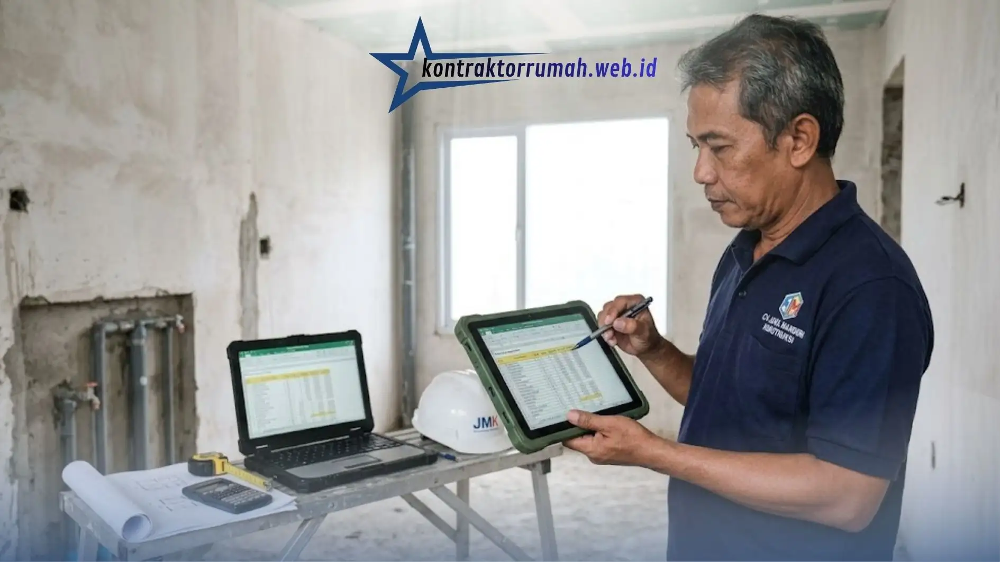

Membangun rumah adalah investasi besar, dan salah satu tahap paling krusial sebelum palu tukang diayunkan adalah menyusun anggaran yang matang. Banyak calon pemilik rumah bingung harus mulai dari mana saat ingin memahami cara menghitung RAB rumah secara mandiri, padahal dengan panduan yang tepat dan bantuan format Excel sederhana, siapa pun bisa memahami logikanya bahkan tanpa latar belakang teknik sipil sama sekali.
Artikel ini akan membedah tahap demi tahap secara runtut, matematis, namun tetap mudah dicerna oleh orang awam.
Poin Penting
- Rumus dasar RAB adalah Volume Pekerjaan × Harga Satuan Pekerjaan, dijumlahkan seluruh item.
- Pekerjaan struktur/beton menyerap porsi biaya terbesar, sekitar 30-40% dari total RAB.
- Di Excel, gunakan rumus perkalian otomatis (misalnya =C2*D2) agar volume & biaya terhitung dinamis.
- Sisihkan dana cadangan (contingency) sekitar 5-10% dari total RAB untuk perubahan desain di lapangan.
- Kontraktor Rumah menyediakan RAB transparan dengan sistem No Hidden Fee tanpa biaya tersembunyi.
Mengapa Memahami Cara Menghitung RAB Rumah itu Sangat Krusial?
Rencana Anggaran Biaya (RAB) adalah "peta finansial" dari sebuah proyek konstruksi. Tanpa RAB yang akurat, pemilik rumah rentan mengalami pembengkakan biaya (cost overrun) di tengah jalan, kehabisan dana sebelum rumah selesai, atau justru dibebankan harga yang tidak transparan oleh kontraktor.
Jawaban Singkat: Secara garis besar, rumus dasar RAB adalah RAB = Volume Pekerjaan × Harga Satuan Pekerjaan, dijumlahkan untuk seluruh item pekerjaan dalam proyek. Volume Pekerjaan dihitung dari gambar kerja (misalnya m³ beton, m² keramik, atau m¹ pipa), sedangkan Harga Satuan Pekerjaan (AHSP) adalah gabungan biaya bahan dan upah tukang untuk menyelesaikan satu satuan pekerjaan tersebut. Hasil perkalian setiap item lalu direkap menjadi total biaya bangun rumah.
Memahami cara menghitung RAB rumah juga memberi pemilik rumah posisi tawar yang lebih kuat saat berdiskusi dengan kontraktor, karena mereka bisa membaca dan mengevaluasi setiap item penawaran, bukan sekadar menerima angka total tanpa rincian.
Komponen Utama dalam Penyusunan Rencana Anggaran Biaya (RAB)
Sebelum masuk ke perhitungan, penting untuk mengenali pembagian komponen pekerjaan dalam RAB rumah tinggal. Pembagian ini bukan sekadar administratif, tetapi mencerminkan urutan logis pembangunan fisik rumah.
- Pekerjaan Persiapan — Meliputi pembersihan lahan, pengukuran (bouwplank), pembuatan direksi keet (kantor sementara di lokasi), hingga mobilisasi alat dan bahan. Porsinya kecil dari total biaya, namun wajib dianggarkan agar proyek berjalan lancar sejak hari pertama.
- Pekerjaan Struktur/Beton — Ini adalah "tulang" rumah: pondasi, sloof, kolom, balok, plat lantai, dan atap struktural. Komponen ini biasanya menyerap porsi biaya terbesar (sekitar 30-40% dari total) karena melibatkan besi beton, semen, dan bekisting dalam jumlah besar.
- Pekerjaan Arsitektural/Finishing — Meliputi pasangan bata/dinding, plesteran, pengecatan, pemasangan keramik lantai dan dinding, plafon, kusen, pintu, dan jendela. Bagian ini menentukan tampilan akhir rumah dan memiliki rentang harga yang sangat lebar tergantung kualitas material yang dipilih.
- Pekerjaan ME (Mekanikal Elektrikal) — Instalasi listrik, titik lampu, stop kontak, pipa air bersih dan air kotor, septic tank, hingga sistem sanitasi. Meskipun "tak terlihat" setelah rumah jadi, kesalahan perhitungan di sini bisa berakibat fatal secara fungsional.
- Pekerjaan Eksterior — Carport, pagar, taman, dan pekerjaan halaman lainnya. Sering terlupakan dalam anggaran awal, padahal bisa memakan biaya signifikan jika desainnya rumit.
Langkah Tahapan Cara Menghitung RAB Rumah di Excel
Setelah memahami komponen di atas, berikut adalah tahapan konkret cara menghitung RAB rumah menggunakan spreadsheet Excel yang bisa Anda praktikkan sendiri.
1. Membaca Gambar Kerja (Bestek) secara Akurat
Semua perhitungan RAB berakar dari gambar kerja (denah, tampak, potongan, dan detail). Pastikan Anda memahami skala gambar dan setiap notasi ukuran (panjang, lebar, tinggi) sebelum mulai menghitung, karena kesalahan membaca gambar akan menular ke seluruh perhitungan berikutnya.
2. Menghitung Volume Pekerjaan untuk Setiap Item
Volume dihitung sesuai satuan yang berlaku untuk masing-masing pekerjaan:
- Pekerjaan beton dan pasangan bata dihitung dalam meter kubik (m³) atau meter persegi (m²).
- Pekerjaan keramik dan pengecatan dihitung dalam meter persegi (m²).
- Pekerjaan pipa dan kabel dihitung dalam meter panjang (m¹).
- Pekerjaan pintu, jendela, dan sanitasi dihitung per unit (buah).
Di Excel, buat kolom terpisah untuk "Panjang", "Lebar", "Tinggi", lalu gunakan rumus perkalian otomatis agar volume terhitung dinamis ketika ada perubahan ukuran.

Contoh format Excel RAB dengan kolom Volume, Satuan, Harga Satuan, dan Total yang saling terhubung otomatis.
3. Menganalisis Harga Satuan Pekerjaan (AHSP)
AHSP (Analisa Harga Satuan Pekerjaan) adalah gabungan dari:
- Harga bahan bangunan sesuai harga pasar terkini di wilayah proyek.
- Upah tukang (tukang batu, tukang kayu, tukang besi, mandor) yang bervariasi antar daerah.
Sebagai contoh sederhana, AHSP untuk pekerjaan plesteran per m² adalah jumlah biaya semen dan pasir yang dibutuhkan, ditambah upah tukang untuk menyelesaikan satu meter persegi plesteran tersebut. Data ini sebaiknya diperbarui secara berkala karena harga material bisa berfluktuasi.
4. Mengalikan Volume dengan Harga Satuan
Setelah volume dan AHSP tersedia, langkah selanjutnya tinggal mengalikan keduanya: Biaya Item = Volume × Harga Satuan.
Di Excel, ini cukup satu baris rumus (misalnya =C2*D2) yang bisa di-drag ke seluruh baris item pekerjaan, sehingga proses menjadi cepat dan minim human error dibanding menghitung manual dengan kalkulator.
5. Melakukan Rekapitulasi (Total Akhir)
Tahap terakhir adalah menjumlahkan seluruh biaya per komponen (Persiapan, Struktur, Arsitektural, ME, Eksterior) menjadi satu lembar rekapitulasi. Dari sinilah pemilik rumah bisa melihat gambaran biaya bangun rumah secara total dan proporsi masing-masing komponen terhadap keseluruhan anggaran.
Mengunduh Template RAB Excel Siap Pakai
Untuk mempermudah praktik, gunakan template Excel yang sudah menyertakan struktur kolom Volume, Satuan, Harga Satuan, dan Total secara otomatis terhubung dengan rumus rekapitulasi. Template semacam ini memungkinkan Anda tinggal mengisi angka volume dan harga tanpa perlu membangun rumus dari nol, sehingga proses belajar cara menghitung RAB rumah menjadi jauh lebih cepat dan minim kesalahan.
Hindari Kesalahan Menghitung Biaya Bangun Rumah
Beberapa kesalahan umum yang sering terjadi saat menyusun RAB secara mandiri antara lain:
- Lupa memasukkan pekerjaan "kecil" namun krusial, seperti pembobokan dinding untuk instalasi, waterproofing, atau finishing sudut ruangan.
- Menggunakan harga satuan yang sudah kedaluwarsa, padahal harga semen, besi, dan kayu bisa berubah dalam hitungan bulan.
- Tidak memperhitungkan biaya mobilisasi dan pembersihan akhir proyek.
- Mengabaikan faktor lokasi, karena upah tukang dan ongkos kirim material berbeda signifikan antar wilayah.
- Tidak menyisihkan dana cadangan (contingency) sekitar 5-10% dari total RAB untuk mengantisipasi perubahan desain di lapangan.
Kesalahan-kesalahan ini sering kali baru disadari saat proyek sudah berjalan, yang berujung pada pembengkakan biaya tak terduga dan stres bagi pemilik rumah.
Dapatkan Rincian RAB Transparan dari Kontraktor Rumah
Menghitung RAB secara mandiri memang bermanfaat untuk memahami gambaran biaya, namun untuk hasil yang benar-benar akurat dan bisa dipertanggungjawabkan, dibutuhkan tim estimator berpengalaman yang memahami harga pasar terkini serta detail teknis di lapangan.
Kontraktor Rumah hadir dengan sistem penawaran RAB yang transparan dan No Hidden Fee — artinya, tidak ada biaya tersembunyi yang muncul di tengah proyek. Setiap spesifikasi material, mulai dari merek semen, jenis besi, hingga tipe keramik, dicantumkan mendetail langsung di lembar kontrak, sehingga Anda tahu persis apa yang Anda bayar.
Dengan pendekatan ini, pemilik rumah tidak perlu lagi khawatir menghadapi "biaya tambahan" yang tiba-tiba muncul saat rumah sedang dibangun, karena semua komponen dari pekerjaan persiapan hingga finishing sudah dirinci sejak awal. Hubungi tim kami melalui WhatsApp di 088989643555 untuk konsultasi RAB gratis sebelum proyek dimulai.
FAQ Seputar Cara Menghitung RAB Rumah
Menyusun RAB rumah tinggal memang membutuhkan ketelitian, namun dengan logika volume × harga satuan dan bantuan format Excel yang tepat, siapa pun bisa memahami gambaran biaya bangun rumah secara mandiri. Jika Anda ingin memastikan RAB proyek Anda akurat dan bebas biaya tersembunyi, tim Kontraktor Rumah siap membantu menyusun rincian RAB yang transparan sejak awal hingga rumah selesai dibangun.